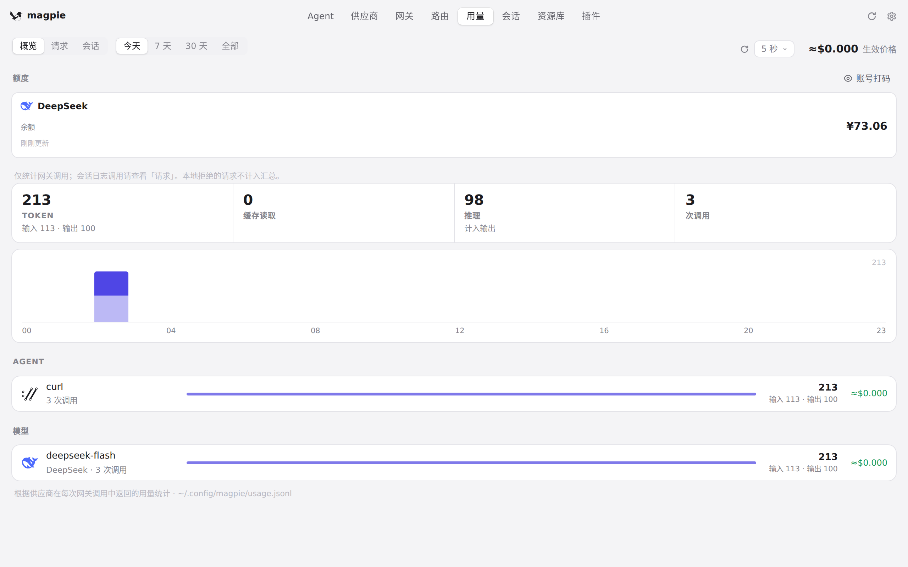
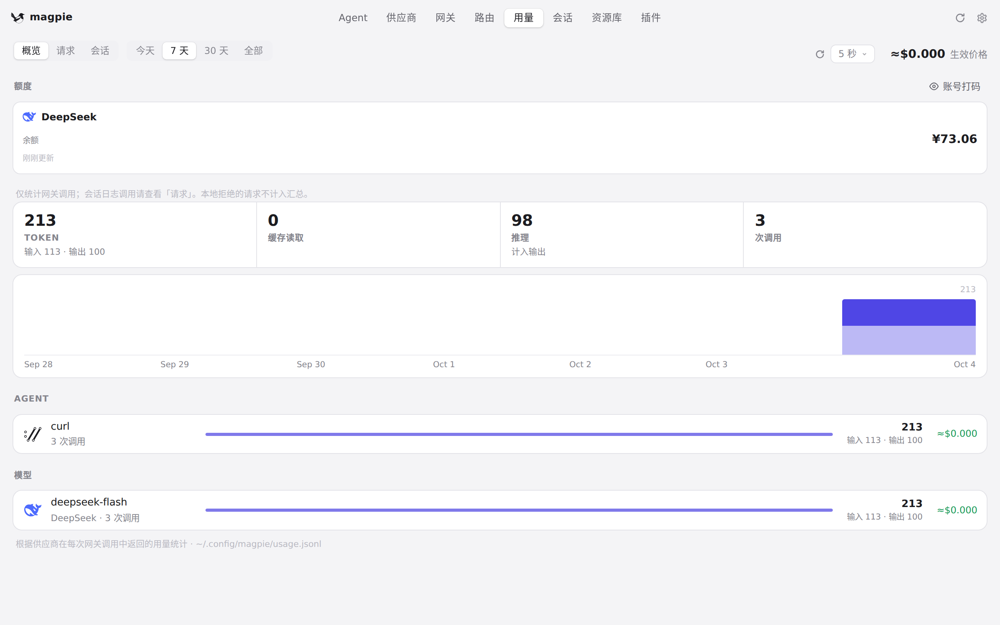
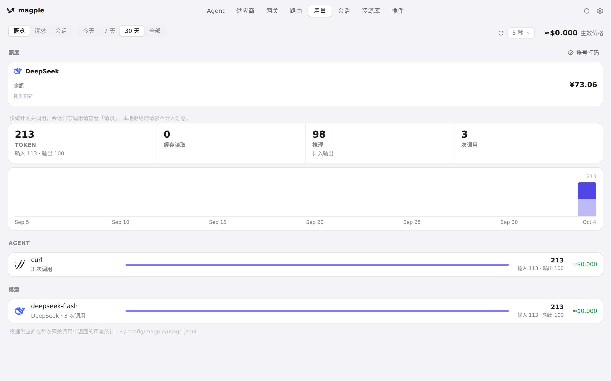
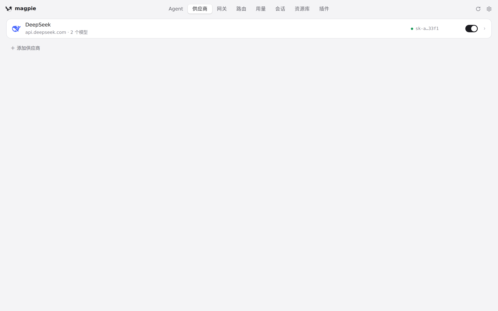

#664 界面预览
commit 47232a5 · 回到 PR · 界面侧只动了 app.js 两处：供应商列表的后台轮询在读取或重载失败后会继续安排下一次重试（不再停下），用量概览的每次读取带一个序号，只有最新一次的答案会绘制，且定时刷新读到同样数字时会结束抢先选周期留下的骨架。其余改动是插件宿主流队列、网关回归测试与 make test-ui。
红线是鼠标走过的轨迹，红色圆环是一次点击；底部文字是这一步在做什么。空格暂停，← → 逐段查看。

用量概览：切换周期与立即刷新 · 用量·概览：今天这个周期的数字

用量概览：切换周期与立即刷新 · 切到「7 天」后的用量概览

用量概览：切换周期与立即刷新 · 连续切换周期后概览上的数字
用量概览：切换周期与立即刷新 · 点「立即刷新」之后的用量概览

供应商页：后台列表轮询所在的位置 · 供应商页：列表在后台每隔几秒重新读取一次